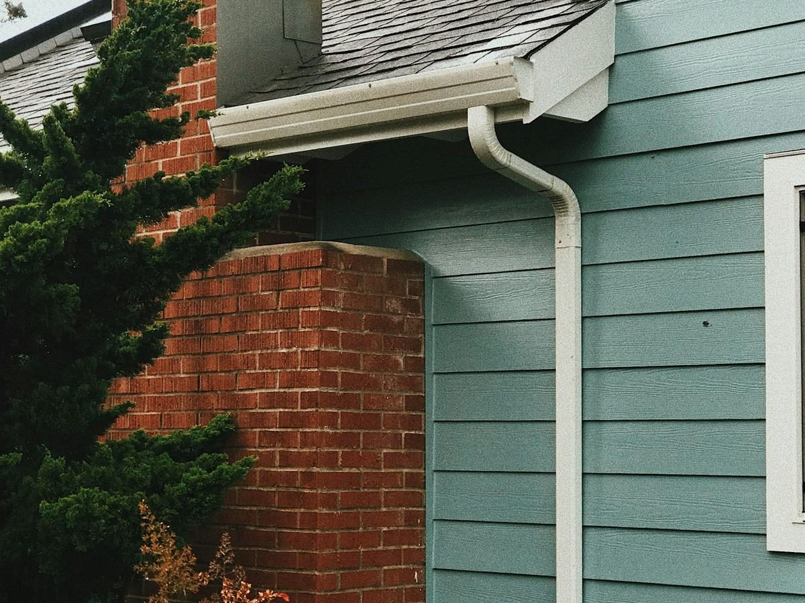
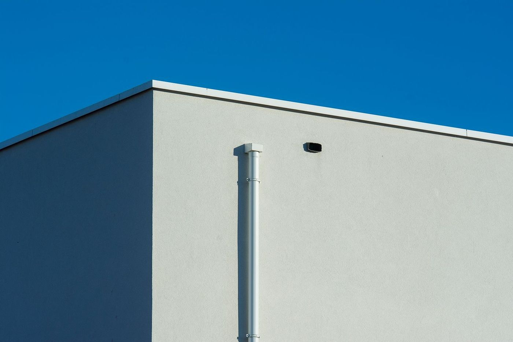
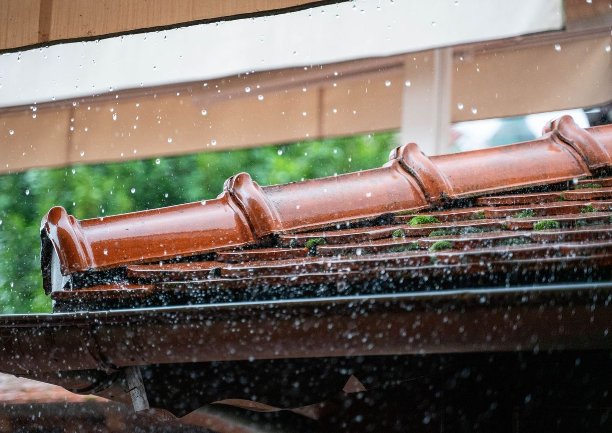
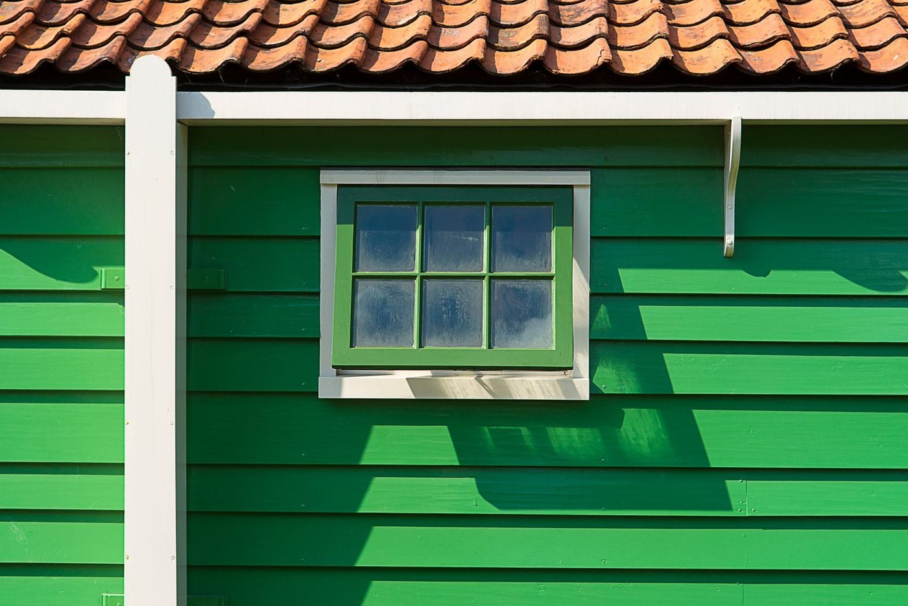

Gutters, cut to fit.
Rainline Seamless Gutters is based in Dobson, NC. We put up new seamless gutters, fix the ones you have and handle roofing and siding too.

What is the rain doing?
Pick what you are seeing. Here is what it points to and what we look at first.
Overflowing when it rains
- What it points to
- A clog somewhere in the run or the downspout, or a gutter that is too small for the roof above it.
- What we look at
- The downspout first, then the size and slope of the run.
Sagging or pulling away
- What it points to
- Hangers that have let go, or soft wood on the board behind the gutter.
- What we look at
- The board behind it. If the wood is sound, new hangers fix it.
Dripping at the joints
- What it points to
- Older gutters are pieced together in sections, and the sealant at each joint wears out.
- What we look at
- Whether a reseal will hold, or whether a seamless run makes more sense.
Full of leaves
- What it points to
- Trees close to the roof. Every fall, they fill the gutters again.
- What we look at
- A cleaning first. Guards only if the trees keep winning.
Water by the foundation
- What it points to
- Downspouts that empty right beside the house, or a stretch of roof with no downspout at all.
- What we look at
- Where each downspout lets out, and whether it needs to carry water farther from the wall.
Roof or siding trouble
- What it points to
- Shingles lifted by wind, a drip near a vent pipe, or siding loose after a storm.
- What we look at
- The roof edge and the wall together, since gutters, roof and siding all meet there.

What seamless means
A seamless gutter is made at the house: one long length of metal, shaped and cut to match each stretch of roof edge. There are no joints along the run, so there are fewer places for it to drip. The only seams are at the corners and the downspouts.
| Gutter width | 5 inch or 6 inchThe bigger size is for large or steep roofs that shed a lot of water. |
|---|---|
| Downspouts | 2 by 3 inch or 3 by 4 inchBigger downspouts empty a long run faster. |
A few common colors
- White
- Black
- Brown
- Gray
There are plenty more. Bring a photo of your trim and we will talk it through.
Clean, repair or replace
A clogged gutter needs a cleaning, not a new gutter. A sagging run on sound wood needs new hangers. We will tell you which one you have.
Clean
Leaves and grit out of the run, downspouts flushed clear.
Repair
New hangers, end caps or a corner that keeps leaking.
Replace
New seamless runs when the old ones are past saving.
Roofs and siding too
Gutters hang where the roof meets the wall, so trouble in one often shows up in the others.

Roofing
Shingles lifted by wind, a drip near a vent pipe or chimney, or flashing that has worked loose. Describe what you can see from the ground.

Siding
Panels loose or cracked after a storm, or stained where an overflowing gutter has been running down the wall.
How it goes
Call or send a photo
Tell us what the rain is doing and where.
We look at the whole run
From the roof edge down to where the water lands.
We tell you what it needs
Clean, repair or replace, and why.
We do the work
Then we run water through it before we leave.
Tell us what you see
Name, phone and what is happening at the house when it rains. We call back to talk it through.
- Call336 555 0158
- Based in
Dobson, NC
Thanks. Your request is in.
We will call you soon.
This is a sample site, so nothing was actually sent.